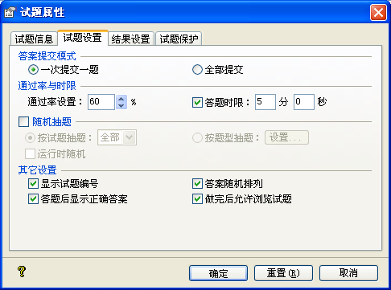
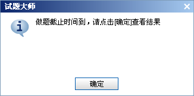

| 属性设置 - 试题设置 |
|
设置页面如下图所示：  Ø 答案提交模式 一次提交一题：若您选择这种模式，则做题后在点击[提交]按钮时，它会对当前的题进行处理，若当前题的反馈信息右用，会显示设定的反馈信息，然后自动跳到下一未做的题，而当前已处理过的题则不能再做，未处理过的则可以再次更改。 全部提交：若选择的此种模式，当前题的反馈信息将不再起作用，试题会判断是否题已做完，并给出对应提示信息，然后执行相应的操作。若您选择查看结果，试题大师会处理每个题，然后显示结果；若选择不操作，则可以继续更改所有的试题。 Ø 通过率与时限 通过率设置：这里设置当前试题的通过率，默认是60%；若测试得分与总分百分比超过通过率，则测试通过，反之不通过。 答题时限：您可以在这里设置当前试题的答题时限。若您勾选此项，且在播放器设置中勾选[做题时间]及其上级，则生成的试题会在右上角显示总时间及已用时，若测试者没有在设定的时间里做完试题，则会弹出时间到提示框，然后显示做题结果，如下图示：  Ø 随机抽题 此选项决定出题的方式，分整个试题范围抽题及按题型抽题两种模式。若勾选此选项，且没有选中[运行时随机]，试题大师会在当前试题中顺序抽取指定数量的题生成试题，且试题一旦生成，在运行期其题及顺序不会再改变。 若是选中[运行时随机]，则生成的试题中，会在试题大师出的所有题中，随机出指定数量的试题，即每次所出的指定数量的题，其顺序与题都有可能不一样。 提示：若您在试题中有加入场景页，则在勾选[随机抽题]时，场景页不参与试题的随机抽题。 Ø 其它设置 显示试题编号：此选项决定在生成的试题中，是否显示试题的编号；若您勾选此选项，则试题的题目左边，显示此试题的编号。 答案随机排列：此选项决定在生成试题时，判断、单选、多选题的答案会随机排列，还是按照出题时的顺序。 答题后显示正确答案：此选项决定，测试者在做完试题并提交后，是否显示正确的答案。 做完后允许浏览试题：此选项的作用是，测试者在做完题，看到结果页面时，是否可以游览做过后的题，也即在结果页面是否显示[浏览]按钮。 |